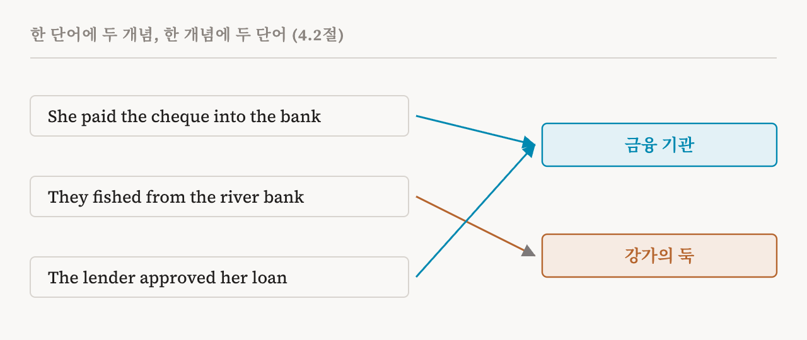
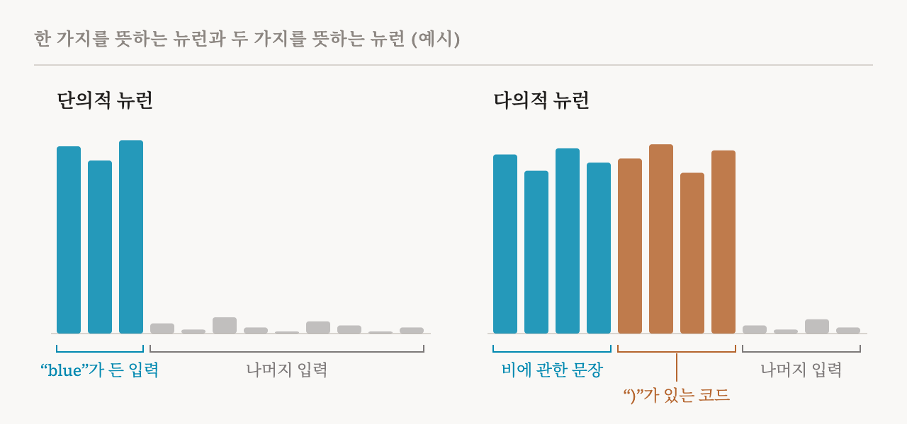

4편은 트랜스포머 안의 숫자들이 어디에 있는지 보여 주었습니다. 잔차 스트림에 있고, 각 MLP의 뉴런에 있습니다. 이번 편은 그 숫자들이 무엇을 나타내는지 묻습니다. 이 책의 4.1절부터 4.3절(21–23쪽)을 다루는데, 저자들은 여기서 책 전체가 쓸 용어를 정리합니다. 이때 모델이 정보를 어떤 특정한 방식으로 저장한다고 아직 가정하지 않도록 조심해서 용어를 정의합니다. 그에 관한 가설은 7편부터 9편까지에서 다룹니다.
두 가지 이해
이 책은 1편부터 3편까지 계속 돌아온 차이를 먼저 정확하게 적어 둡니다. 모델을 하나의 함수로 생각해 봅시다. 가능한 입력 가운데 하나를 받아 출력을 돌려주는 함수입니다. 행동적 해석 가능성은 유한한 시험 입력들에서 모은 입력과 출력의 쌍을 통해 이 함수를 연구합니다. 모델을 블랙박스로 다룹니다.
기계적 해석 가능성은 같은 함수의 안에서 무슨 일이 일어나는지 살펴봅니다. 모델이 계산하는 도중에 만드는 숫자인 활성값(activation), 그리고 그 활성값을 만들어 내는 학습된 가중치인 파라미터(parameter)가 대상입니다. 언제나 모델의 행동과 연결 지어, 여러 수준의 세밀함으로 살펴봅니다. 짧게 말하면 행동적 연구는 모델이 무엇을 하는지 서술합니다. 기계적 연구는 출력이 어떻게 계산되는지 설명합니다.
개념이란 무엇인가
이 책의 거의 모든 방법이 개념을 이야기하므로, 이 책은 이 말을 분명히 정해 둡니다. 개념(concept)은 서로 다른 사례나 맥락에서도 알아볼 수 있는, 뚜렷하고 다시 쓰이는 정보나 지식의 단위입니다. 개 한 마리, 빨간색, 칭찬하는 말처럼 사람에게 익숙한 범주인 개념이 많습니다. 하지만 꼭 그래야 하는 것은 아닙니다.
핵심어는 '다시 쓰인다'입니다. 금융 기관을 뜻할 수도 있고 강가의 둑을 뜻할 수도 있는 영어 단어 "bank"를 생각해 봅시다. 어떤 문장에 어느 개념이 들어 있는지 가리려면 주변 단어가 필요할 수 있습니다. 하지만 일단 가려낸 뒤에는, 금융 기관이라는 개념은 그것이 나타나는 모든 맥락에서 같은 것으로 알아볼 수 있어야 합니다. 단어가 "bank"이든 "lender"이든 마찬가지입니다.

이 정의는 사람이 이름 붙이지 못한 개념도 일부러 받아들입니다. 신경망은 계산에 중요하고 일관되게 다시 쓰이는 정보 단위를 만들면서도, 그것에 맞는 자연스러운 사람의 말은 없을 수 있습니다. 이 책은 사람이 이해할 수 있다는 것을 개념의 조건이 아니라, 어떤 개념들이 마침 가진 성질로 봅니다. 또 지금까지의 해석 가능성 연구는 거의 모두 사람이 쉽게 이름 붙일 수 있는 개념을 다뤘다고 지적합니다. 모델에게는 중요하지만 사람의 범주에 들어맞지 않는 개념을 찾아내고 설명하는 일은 아직 거의 손대지 않은 영역입니다.
한 가지를 뜻하는 뉴런
4편에서 뉴런을 소개했습니다. MLP가 펼친 은닉층의 단위입니다. 뉴런은 텍스트의 위치마다 활성값, 곧 숫자 하나를 가집니다. 이 책은 이를 입력 x에 대한, ℓ층 뉴런 n의 위치 t에서의 활성값으로 씁니다.
가장 해석하기 쉬운 뉴런은 개념 하나에만 반응하는 뉴런일 것입니다. 지금 단어가 "blue"일 때마다 활성값이 크고 양수이고, 그 밖에는 0에 가깝게 머물고, 손으로 바꾸면 모델의 출력이 파란색과 관련된 쪽으로 가거나 멀어지는 뉴런을 떠올려 봅시다. 그렇다면 이 뉴런은 파란색이라는 개념에 대응한다고 말할 만합니다. 이 결론에는 세 관찰이 모두 필요하다는 점에 주의해야 합니다. 뉴런이 파란색에 켜지고, 다른 것에는 조용하고, 그것을 바꾸면 모델의 행동이 파란색과 관련된 방향으로 바뀌어야 합니다.
일부 뉴런이 이렇게 행동한다고 가정하고, 초기 연구는 특정 개념을 감지하는 뉴런을 찾아내고 각 뉴런이 하는 일에 이름을 붙이는 방법을 만들었습니다. 예를 들어 이미지 모델에서는, 2017년에 나온 잘 알려진 방법이 개별 단위를 질감, 물체, 장면 종류 같은 개념에 짝지었습니다.
여러 가지를 뜻하는 뉴런
후속 연구들은 복잡한 사정을 발견했습니다. 개별 뉴런이, 사람이 보기에는 서로 관련 없어 보이는 여러 개념에 강하게 반응하는 경우가 많았습니다. 이를 다의성(polysemanticity)이라고 부릅니다. 그리스어로 '여러 뜻'이라는 말에서 왔고, 반대말은 단의성(monosemanticity)입니다.

이 책의 정의는 신중합니다. 서로 다른 두 개념이 있고, 각 개념에 해당하는 입력과 위치가 있을 때, 그 뉴런의 활성값이 두 경우 모두에서 크고, 그 활성값에 개입하면 두 개념 모두와 관련된 모델의 행동이 인과적으로 영향을 받는다면, 그 뉴런은 다의적입니다. 뒷부분이 중요합니다. 두 가지에 켜지기만 하는 뉴런은, 우리가 알아채지 못한 둘의 공통점을 감지하고 있을 수도 있습니다. 이 책이 말하는 다의성은 그 뉴런이 실제로 두 가지 모두에 일을 해야 성립합니다.
신경망은 왜 이렇게 할까요? 이 책은 표현에 걸리는 제약과 중첩(superposition)을 원인으로 꼽습니다. 중첩은 모델이 개념들을 서로 나눠 쓰게 해서, 뉴런 수보다 많은 개념을 저장한다는 생각입니다. 이 가설은 8편에서 다룹니다. 원인이 무엇이든, 다의성은 뉴런 하나하나로 설명하기 어렵게 만듭니다. 모델이 담고 있는 의미 있는 내용이 개별 뉴런과 맞아떨어지지 않을 수 있다는 뜻이고, 그래서 연구자들은 다른 분석 단위를 찾기 시작했습니다.
이 책 바깥의 이야기를 하나 덧붙입니다. 다의성이 실제로 얼마나 널리 퍼져 있는지는 아직 논쟁 중입니다. 이 사이트가 「신경망은 이미 깨끗하다」에서 자세히 읽은 닉 캐머라타(Nick Cammarata)의 2026년 에세이는, 다의적 뉴런의 유명한 사례 일부가 잘못 읽혔고 많은 뉴런이 이 분야가 생각해 온 것보다 깨끗하다고 주장합니다. 이 책의 정의는 바로 이런 논쟁에 쓸모가 있습니다. 어떤 뉴런에 대해서든 무엇을 보이면 질문이 풀리는지 알려 주기 때문입니다.
특징
개별 뉴런이 다의적인 경우가 많기 때문에, 기계적 해석 가능성은 점점 다른 단위로 옮겨 갔습니다. 연구자들은 모델이 사람이 이해할 수 있는 개념을 활성 공간의 방향으로, 또는 저차원 다양체(manifold)로 담는 경우가 있다는 것을 발견했습니다. 다양체란 축 하나가 아니라 공간 안의 곡선이나 곡면 같은 구조를 말합니다. 이 책은 특징(feature)이라는 말을 넓게 써서, 사람이 이해할 수 있는 개념에 대응하는 모델 안의 모든 표현을 가리킵니다.
구체적으로 보면 이렇습니다. 4편에서 본 것처럼 한 위치의 잔차 스트림은 숫자 d개의 목록입니다. 이런 목록 전체의 집합이 스트림의 활성 공간이고, 이 공간은 d차원입니다. 뉴런 하나하나는 이런 공간의 축 하나에 해당합니다. 이 책의 기술적인 의미에서 특징은 어떤 구성 요소의 활성 공간 안에 있는 기하학적 구조입니다. 그 구성 요소는 잔차 스트림일 수도, 어텐션 헤드의 출력일 수도, MLP의 출력일 수도 있습니다. 가장 단순한 구조는 방향, 곧 여러 뉴런을 한꺼번에 특정한 비율로 섞은 것입니다.
이 책의 형식적 정의는 두 부분으로 되어 있습니다. 어떤 개념과 연결된 특징은 활성 공간 안의 기하학적 구조로서, 그 활성이 개념의 존재를 예측하고, 개념의 존재나 표현에 인과적으로 관련된 것입니다. 그러니 뉴런과 마찬가지로, 어떤 개념을 나타낸다고 주장하는 특징은 두 가지를 해야 합니다. 개념이 있을 때 그 활성이 올라가야 합니다. 그리고 그것을 키우거나 억누르면 개념과 관련된 방식으로 모델의 행동이 바뀌어야 합니다. 1편의 기계적 분석의 두 조건과 짝을 이룹니다. 모델 내부와의 상관관계를 찾고, 이어서 개입으로 그것이 중요하다는 것을 보이는 것입니다.
이런 의미에서 특징은 뉴런보다 표현력이 크고 더 일반적인 단위입니다. 뉴런은 마침 축과 맞아떨어진, 특정한 방향 하나입니다. 특징은 어떤 방향이든 될 수 있고, 휘어진 구조일 수도 있습니다.
근사로서의 방법
이 책은 이 시점에서 특징이 실제로 어떤 형태인지 단정하지 않습니다. 특징을 찾고 조작하는 지금의 방법들을, 각자의 가정에 따라 모양이 정해지는 실용적 근사로 다룹니다. 후보 특징을 찾는 방법은 두 갈래입니다. 판독 기반 방법은 활성값을 읽을 수 있는 무언가로 옮기는데, 언어 모델에게 활성값을 설명하게 하는 경우가 많습니다(22편). 희소 분해 방법은 활성값을 더 단순한 여러 부분으로 쪼갭니다. 가장 잘 알려진 것이 희소 오토인코더입니다(10–13편). 연구자들은 그다음 후보를 조작해서 그것이 인과적으로 중요한지 시험합니다.
실제로는 이런 방법 대부분이 선형 프로브나 딕셔너리 학습(dictionary learning)처럼, 특징을 더하고 잴 수 있는 방향, 곧 거의 선형적인 것으로 다룹니다. 이 가정이 타당한지는 7편의 주제입니다.
하나를 찾았다고 그것뿐인 것은 아니다
이 절은 경고로 끝납니다. 어떤 개념에 대해 찾아낸 특징은, 그 개념과 연결된 여러 내부 표현 가운데 하나일 수 있습니다. 이 책이 드는 예는 거절, 곧 모델이 요청을 거절하는 경향입니다. 2024년의 한 연구는 잔차 스트림에서 모델이 거절하는 쪽이나 거절하지 않는 쪽으로 조종되는 방향 하나를 찾았습니다. 눈에 띄는 결과입니다. 하지만 이 방향이 거절이 표현되는 방식의 전부라는 것을 보여 주지는 않습니다. 모델은 여러 층과 구성 요소에 걸쳐 더 복잡한 방식으로 거절을 담고 있을 수 있고, 저차원 다양체처럼 인과적으로 관련된 다른 구조가 아직 아무도 찾지 못한 채 있을 수도 있습니다.
같은 주의가 이 연재 전체에 적용됩니다. 어떤 개념의 손잡이를 찾았다면, 그 손잡이가 작동한다는 것까지는 보인 것입니다. 그것이 유일한 손잡이라는 것도, 모델이 그 개념을 어떻게 표현하는지 이제 이해했다는 것도 보인 것은 아닙니다.
| 용어 | 뜻 |
|---|---|
| 활성값 | 모델이 계산 도중에 만드는 숫자. 예를 들어 한 위치에서 뉴런 하나가 내는 값 |
| 파라미터 | 활성값을 만들어 내는 학습된 가중치 |
| 개념 | 맥락이 달라도 알아볼 수 있는, 뚜렷하고 다시 쓰이는 정보 단위 |
| 기계 고유의 개념 | 모델에게는 중요하지만 자연스러운 사람의 말로 설명되지 않는 개념 |
| 단의적 | 한 가지 개념에 반응하고, 그 개념에 대해 작용하는 |
| 다의적 | 서로 무관한 여러 개념에 강하게 반응하고, 각각에 대해 행동에 영향을 주는 |
| 활성 공간 | 어떤 구성 요소가 가질 수 있는 모든 활성 벡터의 공간. 숫자 하나가 차원 하나 |
| 특징 | 개념을 예측하고 그 표현에 인과적으로 영향을 주는, 활성 공간 안의 기하학적 구조 |
| 방향 | 여러 차원을 한꺼번에 일정한 비율로 섞은 것. 가장 단순한 형태의 특징 |
| 다양체 | 활성 공간 안에 있는 원이나 곡면 같은 휘어진 구조 |
6편에서는 특징과 구성 요소가 이어져 회로를 이루는 방식을 봅니다. 이 책이 메커니즘을 설명하는 방법입니다.